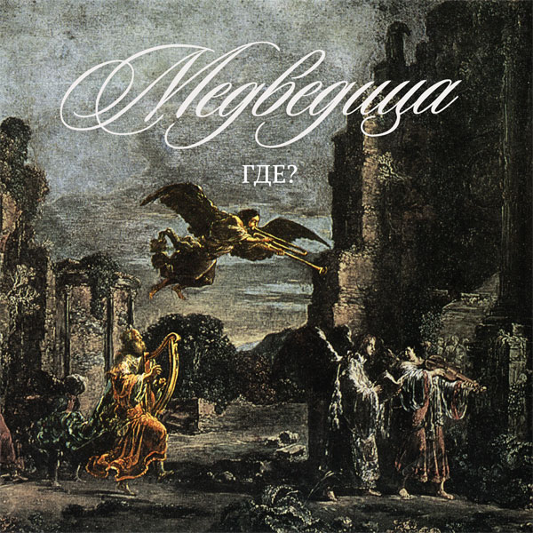

Юрий Шевченко · ГДЕ? · Медведица
Закодированные жизненные ощущения авторов
в период

Руслан Гончаров: тексты, блокфлейта, голос.
Юрий Шевченко: музыка, гитара, голос, оформление обложки.
Валерий Лаврентьев — некто говорящий.
Денис Неботов (Колесо) проходил мимо.
Сергей Нападайло (SNAP): запись, сведение.
Записано на OVERLOAD home-Studio в Горловке летом 2000 года.
В альбоме звучат цитаты: из письма Байрона своему другу; из книги Распэ «Приключения барона Мюнхгаузена».
Обложка оформлена с использованием картины голландского художника Леонарта Брамера «Пляшущий царь Давид».
Дата релиза — 24 августа 2000 г.